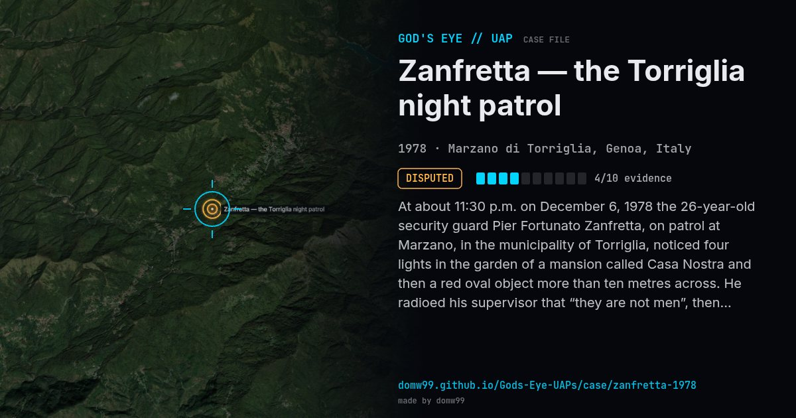

Zanfretta — the Torriglia night patrol

At about 11:30 p.m. on December 6, 1978 the 26-year-old security guard Pier Fortunato Zanfretta, on patrol at Marzano, in the municipality of Torriglia, noticed four lights in the garden of a mansion called Casa Nostra and then a red oval object more than ten metres across. He radioed his supervisor that “they are not men”, then contact was lost; he was found unconscious and in shock. He described three-metre beings with mottled skin, yellow triangular eyes and clawed feet. A semicircular imprint of flattened grass was found in the garden, and Carabinieri Brigadier Antonio Nucchi collected 52 statements from people who had seen strange lights that night. A neurologist found no mental disturbance in January 1979. Zanfretta later described further abductions, eleven in all between 1978 and 1981, which are the most disputed part of the story.
Explanation
Sceptics say the grass imprint matched the place where the owners tied a horse, that regression hypnosis can create false memories, that the beings resembled characters in popular 1978 Italian TV and comics, and that the “footprints” were puddles. Italy’s national UFO centre (CUN) judged the case unreliable.
What was seen
Shape: Red oval craft over 10 m across; later a triangular craft
Witnesses: Pier Fortunato Zanfretta (a security guard); 52 other statements
Duration: Under an hour
Sources
Browse
- Italy
- 1970s
- Disputed
- Close encounters
- Official government documents
- Many independent witnesses
- Physical traces
- Spheres and orbs
- Triangles and V shapes